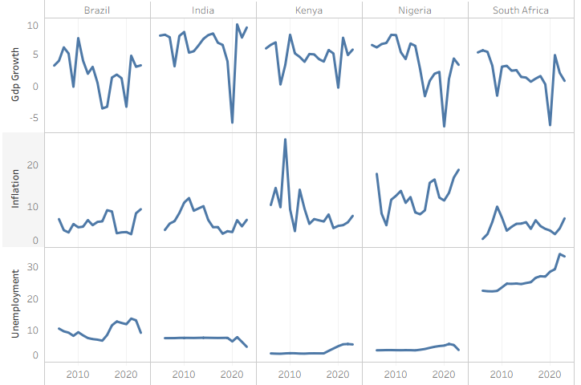
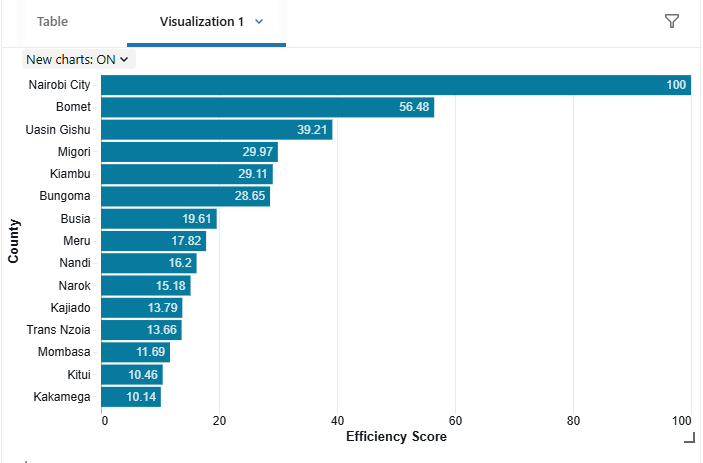
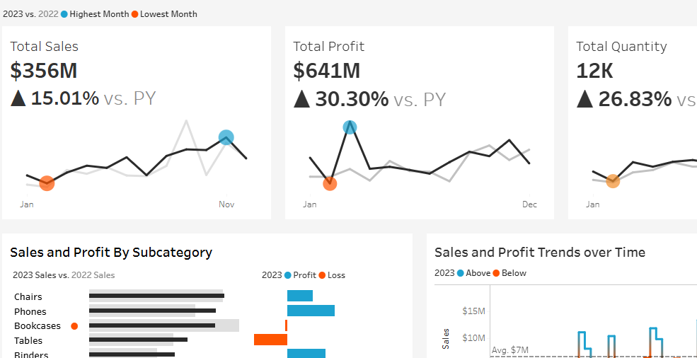
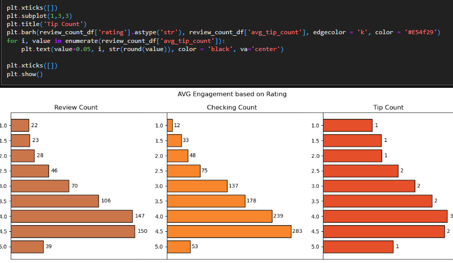
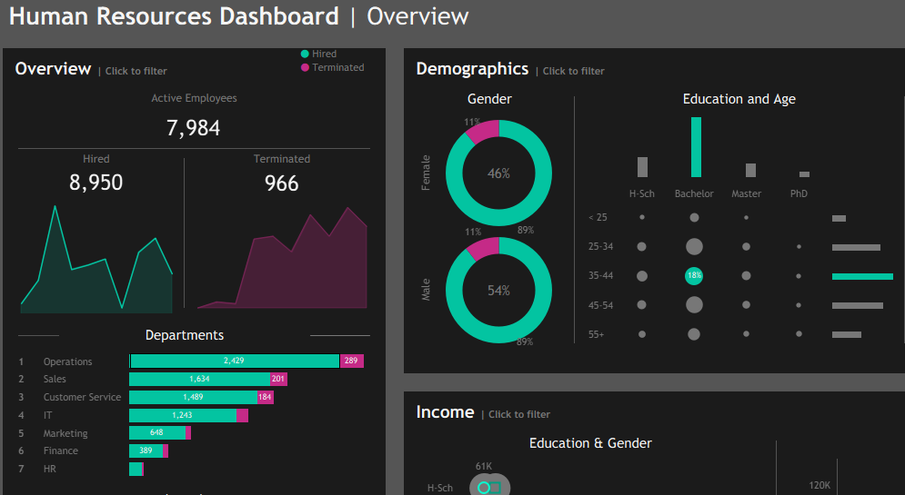
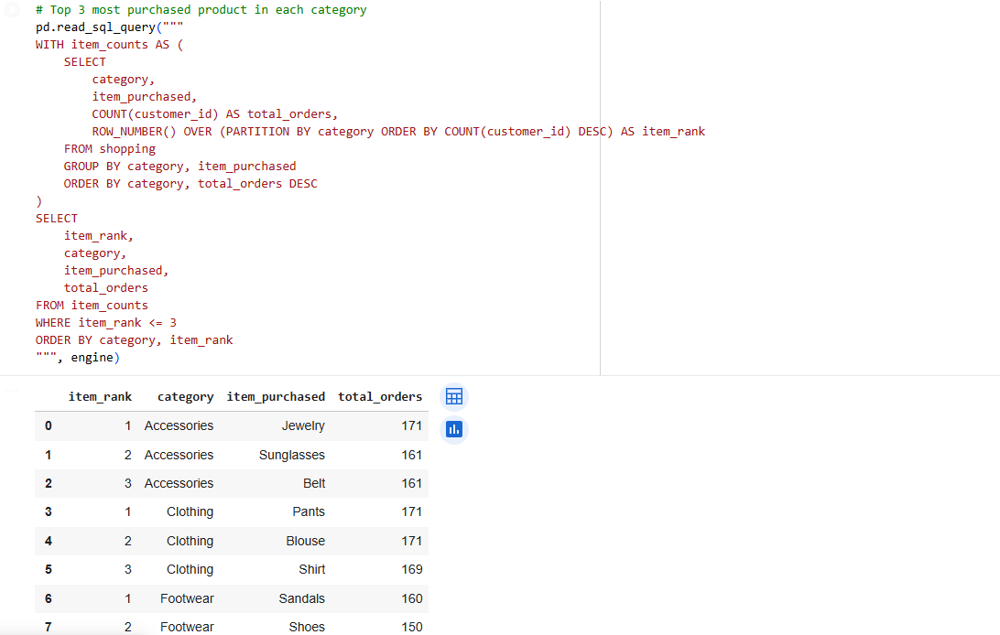
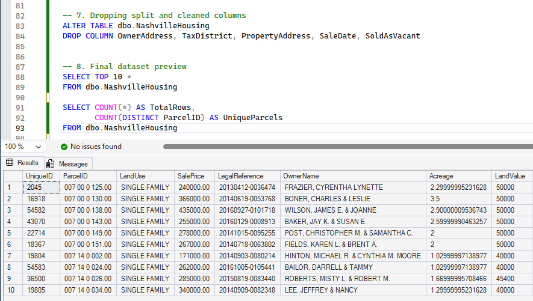

Analyzing macroeconomic risk and stability across countries using a SQL-based data warehouse with analytics-ready modeling. The project integrates World Bank and IMF data, transforms multi-source economic indicators, and engineers composite metrics to evaluate risk profiles and macroeconomic performance over time.

Evaluating the efficiency of public health spending across Kenyan counties using PySpark, Delta Lake, and Databricks. The project applies a Medallion Architecture to transform multi-source government data and develop an interpretable efficiency model linking health expenditure to mortality outcomes.

End-to-end customer and product sales analytics pipeline, including data ingestion, aggregation, feature engineering, performance analysis and visualization.

Exploratory and analytical study of Yelp restaurant data focusing on review sentiment, user activity and key business performance metrics.

Exploratory data analysis and building interactive dashboards to analyze workforce and organizational metrics.

Analysis of customer shopping behavior to identify top-selling products, high-value customers and purchasing patterns using SQL and Python.

SQL-based data transformation and normalization techniques to prepare raw housing data for analysis.